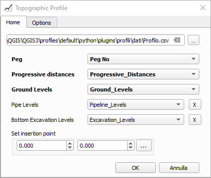

Topographical Profiles
This plugin generate topographic profiles from a CSV file. This is how the final result looks like:
The profile name group in TOC is the CSV file name (every CSV file will generate a separated group), while the different row labels are generated from the CSV field names
Main window form: home and option tab
in bold the minimum data required

H ref is a an additional distance to avoid ending up on the grid lines

CSV example
CSV file must be comma separated